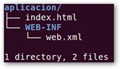
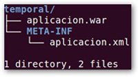

3.3.- Estructura de carpetas de una aplicación empresarial. Archivo EAR.
En el mundo Java EE tenemos tres posibles tipos de aplicaciones: aplicaciones web, objetos distribuidos EJBs y aplicaciones empresariales, que no son más que un conjunto de las dos anteriores aplicaciones.
Una aplicación empresarial Java EE (archivo .EAR) es un conjunto de módulos, siendo un módulo una aplicación web completa (empaquetada en un archivo .war) o conjunto de objetos distribuidos EJBs (empaquetados en un archivo .jar).
Podemos resumir que la estructura del archivo EAR es:
- /*.war: Archivos war.
- /*.jar: Archivos (ejb) jar.
- /META-INF/application.xml: Descriptor de despliegue del módulo EAR, en donde se dan de alta y se declaran el nombre y descripción de la aplicación que se despliega, y los diferentes módulos web y EJB que forman la aplicación.
Vamos a suponer una estructura lo más sencilla posible para una aplicación web como la siguiente, y que es la que constituye el archivo "aplicacion.war":
donde observamos una página estática "index.html" y un descriptor del despliegue "web.xml", a partir de esta estructura pretendemos construir nuestro propio archivo EAR que contendrá un solo archivo WAR con una página HTML estática.
Una vez situados en la carpeta "aplicacion", mediante el comando
#jar cvf aplicacion.war * generaremos el archivo .WAR correspondiente a la aplicación; podremos comprobar que se trata de un
formato similar a los archivos .zip probando a abrirlo con un programa compresor.
Para construir el archivo .EAR, como mínimo, tendremos que crear un descriptor de despliegue al que llamaremos "aplicacion.xml", para ello creamos una carpeta llamada "temporal" en donde situamos el archivo "aplicacion.war"; en la misma ruta creamos una carpeta llamada "META-INF" donde vamos a crear el descriptor; quedando la estructura del siguiente modo:
Nos situamos dentro de la carpeta "temporal" y creamos el archivo .ear mediante el comando:
#jar cvf aplicacion.ear *
y tendremos así el archivo .ear correspondiente a la aplicación creada.